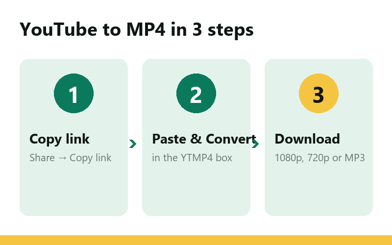
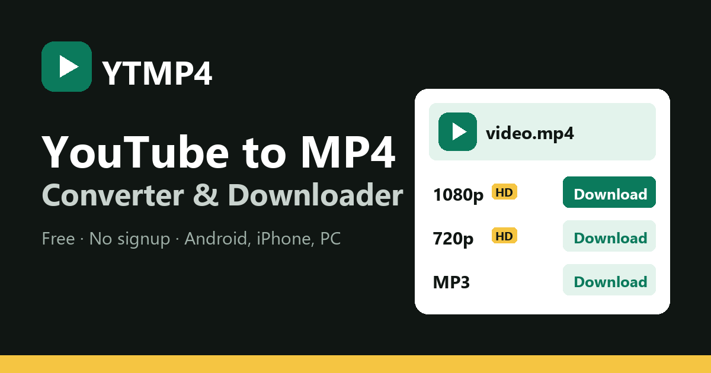

YTMP4 – YouTube to MP4 Converter
Paste a YouTube link, choose a quality, download. MP4 up to 1080p HD and MP3 audio, free and without signing up.
Works with videos, Shorts and youtu.be links · No app · No account
Links stay valid for a few hours.
How to convert YouTube to MP4
- Copy the link. In the YouTube app tap Share → Copy link. On a computer, copy the address from the browser bar.
- Paste it above. Put the link in the box and press Convert. YTMP4 reads the video and lists every format it has.
- Pick a quality and download. Choose 1080p for the sharpest picture, 360p for a small file, or MP3 for sound only.

Why people use YTMP4
Most of us save videos for the same reasons: a long flight without Wi-Fi, a tutorial you want to follow step by step, a lecture you want to watch again before an exam, or a clip for a school or work presentation. Streaming every time costs data and doesn't work in the metro. A local MP4 file just plays.
YTMP4 keeps the job simple. There is one box, one button and a clear list of files. You don't install anything, you don't make an account, and you don't have to guess which button is the real one. The download starts from the list you see, named after the video title.
Every quality the video has
When you convert, YTMP4 asks YouTube which formats exist for that video and shows all of them with their approximate size. HD videos usually come in these versions:
| Quality | Good for | Size of a 10-minute video |
|---|---|---|
| 1080p (Full HD) | TV, laptop, editing | about 120–250 MB |
| 720p (HD) | Phones and tablets | about 60–120 MB |
| 480p | Saving storage | about 35–60 MB |
| 360p | Slow connections | about 20–40 MB |
| MP3 audio | Music, podcasts, talks | about 8–10 MB |
The video and its sound arrive together in one standard MP4 file (H.264 video with AAC audio when available), so it opens in the gallery app on Android, in Photos on iPhone and in any player on Windows or Mac.
On Android, iPhone and computer
Android: use Chrome or any browser. The file lands in the Download folder and shows up in your gallery a moment later.
iPhone and iPad: use Safari. After the download finishes, open Files → Downloads, tap the video, then Share → Save Video to put it in Photos.
Windows, Mac and Linux: any modern browser works. Files go to your normal Downloads folder.

YouTube to MP3 with the same tool
You don't need a second site for music. After converting, switch to the MP3 audio tab. MP3 plays on every device and car stereo; M4A is the original audio track and is slightly smaller at the same quality. Audio files are a fraction of the video size, so an hour-long podcast fits easily on any phone.
If you mostly convert music or need more audio options, the full YouTube to MP3 converter on ytmp4.store is built for that, and YTMP4 at ytmp4.store has the converter in 13 languages.
Use it fairly
Download your own uploads, Creative Commons videos, and anything the creator allows you to keep. Re-uploading someone else's work is against YouTube's rules and copyright law. YTMP4 is an independent tool and is not affiliated with YouTube or Google.
Questions
Is YTMP4 free?
Yes. Every quality, MP4 and MP3, is free. There is no account, no app and no daily limit for normal use.
What is the best quality I can download?
YTMP4 lists every quality the video was uploaded in, usually up to 1080p and sometimes 1440p or 4K. The best one is shown first.
Does YTMP4 work on iPhone?
Yes. Open the page in Safari, convert the video and tap Download. iOS saves it in the Files app under Downloads, and from there you can save it to Photos.
Can I download only the audio?
Yes. After converting, open the MP3 tab and pick MP3 or M4A. You get the sound only, which is smaller and good for music and podcasts.
Do Shorts links work?
Yes. Paste a youtube.com/shorts link the same way as a normal video and it downloads as a vertical MP4.
Where are my downloads saved?
In your browser's normal Downloads folder: the Download folder on Android, Files > Downloads on iPhone and the Downloads folder on a computer.